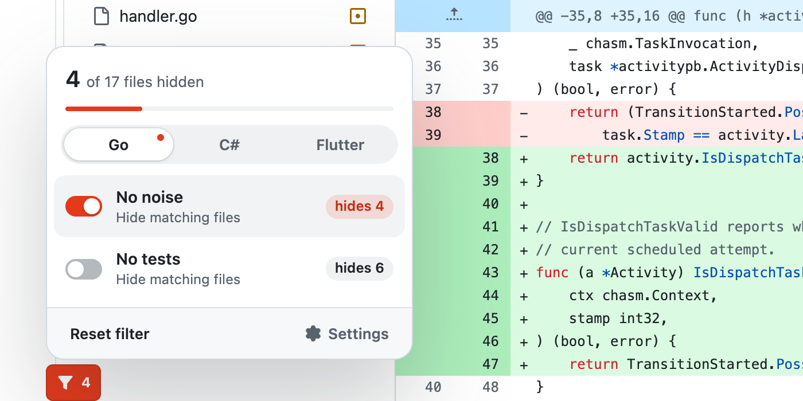

Right next to GitHub's filter
A Filter button appears next to GitHub's own "Filter files" box. One click hides generated code, lock files and snapshots from the diff and the file tree.

A Chrome extension that hides generated code, lock files and snapshots in GitHub pull requests. You review only the code people wrote.
These are the changed files from temporalio/temporal #12206. Turn the shortcuts on and off and watch the list change.
A Filter button appears next to GitHub's own "Filter files" box. One click hides generated code, lock files and snapshots from the diff and the file tree.
Each shortcut shows how many files it will hide in this pull request. No guessing, no surprises.

Go, C# and Flutter work out of the box. Add any other language with your own patterns, or let your AI assistant write them for you.

Not sure what to hide in your repository? The settings page writes a prompt for you. It tells your AI assistant what is safe to hide, and what is not: source code, tests, migrations and API contracts stay visible.
It runs only on github.com and reads only file names. It sends nothing anywhere: no account, no analytics, no network requests.
Free and open source. Install it in one click from the Chrome Web Store.